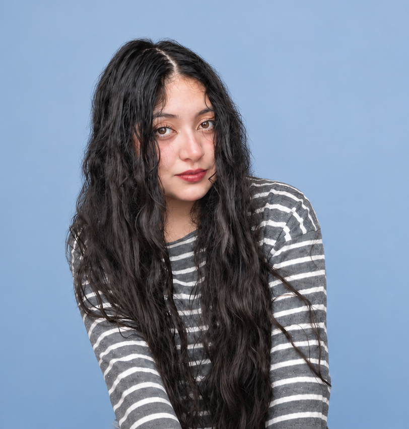

Deilyn Zamudio Córdova ♡♡♡PORT FOLIO
explore my world ↗made with imagination & just a little chaos
© 2026 / deilynhi, there! ✿
I'm Deilyn, a Chilean creative with a passion for storytelling.
I've always been fascinated by how stories can connect people and turn something ordinary into something meaningful and lasting. That's what has led me to explore different creative fields, from visual arts to writing and performing arts, and even web development and digital content creation.
As a content creator, I'm especially interested in finding creative ways to communicate ideas, build connections with audiences, and give brands and projects a voice of their own.
I'm also the co-founder of Vonté Dance & Theatre, where I've had the opportunity to bring creative ideas to life through artistic projects, brand promotion, and collaborative work.
I believe that a great story has the power to reach people everywhere, and that stories can be told in many different ways, whether through a photograph, a video, a website, or even a simple social media post.
I'm constantly learning, experimenting, and looking for new ways to turn ideas into experiences.
Because, to me, creativity is not just about what's beautiful to the eye, but what's meaningful to the heart.